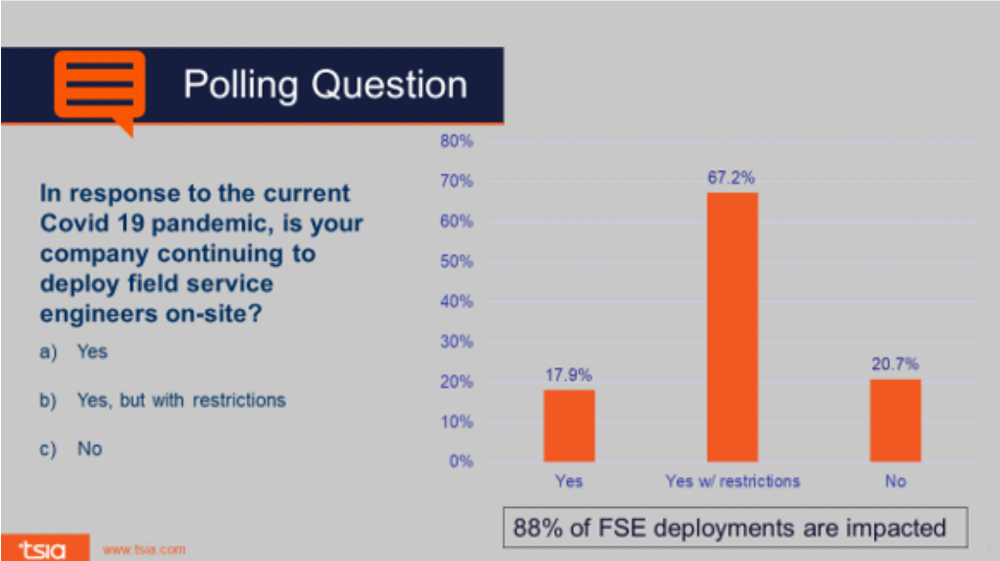

It is at the core of every utility provider to fulfill and exceed customer expectations in Field Services Management. However, the traditional system of Field service management fails to meet up with these expectations. This is largely due to its inefficiencies in processes and operations.
In this system, operations such as logging, monitoring, and control of numerous variables are performed by human labor and prone to much error. Also, tracking all unprecedented changes on-site demands a significant amount of time and precision.
Among other things, delays, miscommunications, incorrect and incomplete information are common drawbacks of the system. Notable changes began to occur in the wake of the increased adoption of mobile devices and connected systems. Many Field Service Management companies adopted mobile apps and similar FSM technologies or software that assisted them in providing better services to customers.
Unfortunately, a novel set of challenges arose with the global COVID-19 pandemic. Currently, FSM contractors are saddled with keeping technicians and customers safe as well as providing essential field services.
To combat these challenges, experts have suggested using certain guidelines, including efficient Field Service Management software, to reduce visits to the field.
In a poll conducted by TSIA on their State of Field Services webinar, 88% of the attendees admitted that Field Services Engineer deployments had been impacted
Some of the challenges of the Field Services Management industry amid the COVID-19 pandemic are as belows
Fielda is a mobile Field Services Management Platform specifically designed to enhance and accelerate field service processes (inspection, work, and service orders) by eliminating manual tools (paper and pen, forms, or human memory) to track and complete field works.
Fielda mobile app is simple and easy to use and install on any IOS device (iPhones and iPads).
As a digital solution platform, Fielda caters to the needs of small, medium, and large companies or workforces in various sectors and industries, not exempting telecom, oil and gas, electric companies, utility workers, local governments, and much more.
Fielda can also help to connect the assets of the Utility providers so that tickets are automatically logged by the asset, and proactive technician dispatches for these services can happen even without a scheduled field inspection To successfully survive these tough times, field service organizations must adopt new strategies and technologies at every level of operation, to optimize its services and retain clients. All necessary safety measures must also be put in place to protect employees and customers from the dangers of the virus. Fielda software offers solutions to these new problems and eliminates the inefficiencies inherent in the traditional systems.